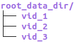

Welcome to the documentation for the Kennedy lab’s unsupervised analysis tools!¶
Overview¶
These pages contain documentation relevant for unsupervised analysis methods used in Ann Kennedy’s lab at Northwestern University.
There are currently three models available for use: the Trajectory Variational Autoencoder (TVAE), TREBA, and Vector Quantized TREBA with triplet loss (VQ-TREBA).
To generate clusters corresponding to behavioral motifs, the TVAE and TREBA both require some post-hoc clustering of the generated embeddings and VQ-TREBA does not.
The goal of this documentation is both to explain how each model variant works and make it as easy as possible to adapt the models to work on new datasets.
The documentation for each model is split up into a reference document, meant for those implementing / modifying the models, as well as a section with more explicit mathematical details.
Any suggestions are more than welcome.
Quickstart guide¶
Setting up a new experiment¶
To setup the directory structure for a new experiment, in the terminal type
bash setup.bash <your_new_project_name>./experiments/<your_new_project_name>/checkpointswill be where the model checkpoints will be stored../experiments/<your_new_project_name/logwill be where the log used to visualize the loss in tensorboard will be stored.
Next, you should create a copy of the template configuration file available in
./experiments/example_tvae/config.jsonand add the copy to./experiments/<your_new_project_name/. Theconfig.jsonhas three dictionaries within it:data_config: This is passed to the instantiation of a new dataset object. Dataset objects will be explained in the third step. Any additional parameters needed for loading and preprocessing data should be added here. After you create a new dataset object in the next step, you will need to change thenameparameter here to reflect the new dataset object you created as well as in./lib/util/datasets/__init__.py.model_config: This is used to pick the model architecture being used (e.g.TVAEin the example configuration) and to configure the dimensions of the different layers in the model. If you’re creating a new dataset object, the main parameter you should update here isstate_dimwhich represents the dimensionality of each frame of each trajectory in the inputs. For additional information on what the different keys represent, check the model documentation.train_config: This is used to configure training parameters such as the batch size, device to use for training, how many epochs etc.One important thing to recognize is that
num_epochsis a list. This is because some models use staged training. The current support for and explanation of different stages of training is in the documentation for each model.
Structuring the folders containing your data¶
In all likelihood, you are learning representations of video data. Much of the code in this repo assumes your data has the following structure:
where
vid_1,vid_2, andvid_3corresponds to directories which contain the data you are learning representations of. The outputs of the model corresponding to a given video will be stored in that video’s directory.
Creating a new dataset object¶
To train any of the model variants, you first need to create a new dataset object which inherits from the base module
TrajectoryDataset. An example dataset is available here:MouseV1DatasetThe first method from
TrajectoryDatasetyou need to override in your new dataset object isload_data(data_config).This function is called to load the trajectories you are interested in embedding and should return a
np.arrayortorch.tensorof the shape[num_trajs, traj_len, num_features]There should be a
root_data_dirfield in yourdata_configthat is the path to the video directories explained in the previous step.
The second method you will need to override is the static method
load_videowhich tellsTrajectoryDatasethow to load a single video’s data for your given dataset. The output expected forload_videois[num_trajs, traj_len, num_features]The third method you need to override is
preprocess(data_config, trajectories). This is where you will do any preprocessing of the data loaded in viaload_data. This function must also return anp.arrayortorch.tensorof the shape[num_trajs, traj_len, num_features].The fourth method you need to override is
postprocess(trajectories). If you perform any preprocessing of your input data (e.g. decomposition) and you want to see what the reconstructions of the original inputs look like, you should make this function perform the inverse of whatever your postprocessing steps are.
Training the model¶
Running
python train.py --config_dir ./experiments/<your_experiment_name>will train the model. It will likely take several hours to complete, depending on your hardware and how much data you are using.Once the model has completed training, there will be a directory titled
stage_<x>within the./experiments/<your_experiment_name>/directory, for each stage of training you have. Within each of these directories, there will be a file calledbest.ptwhich will be the checkpoint with the lowest negative-log-likelihood on the evaluation set for that stage.To monitor the model’s training progress with tensorboard, in the terminal type:
tensorboard --logdir=./experiments/example_tvaeand click on link to a port onlocalhostthat is printed to the terminal. To monitor the training process across machines see this note <link>.
Generating reconstructions¶
Running
python reconstruct.py --config_dir ./experiments/<your_experiment_name>will generate reconstructions for all videos in theroot_data_dirspecified ineval_configand outputs them to their respective folders.You can also generate random reconstructions from one of the videos in
root_data_dirusingpython plot_example_reconstructions.py --config_dir ./experiments/<your_experiment_name> --num_reconstructions <some_integer>. The output of this will be stored in arandom_reconstructionsfolder within your experiment folder.All supported models are based on the variational autoencoder and the reconstruction process samples
eval_config[num_samples]embeddings from the inferred posterior, decodes each embedding to get a reconstruction, and then picks the “best” reconstruction as the one with the lowest negative-log-likelihood. Increasingeval_config[num_samples]will dramatically increase the amount of time it takes forreconstruct.pyto complete, but you may get more realistic reconstructions of the input data.
Generating embeddings using the TVAE¶
Running
python embed.py --config_dir ./experiments/<your_experiment_name>will iterate through and generate embeddings for all of the video subdirectories in theroot_data_dirspecified ineval_configAll of the models currently supported are based on the variational autoencoder architecture and use the mean of the inferred posterior for each input as the embedding for each trajectory.
TREBA quickstart guide¶
Under construction
VQ-TREBA quickstart guide¶
Under construction